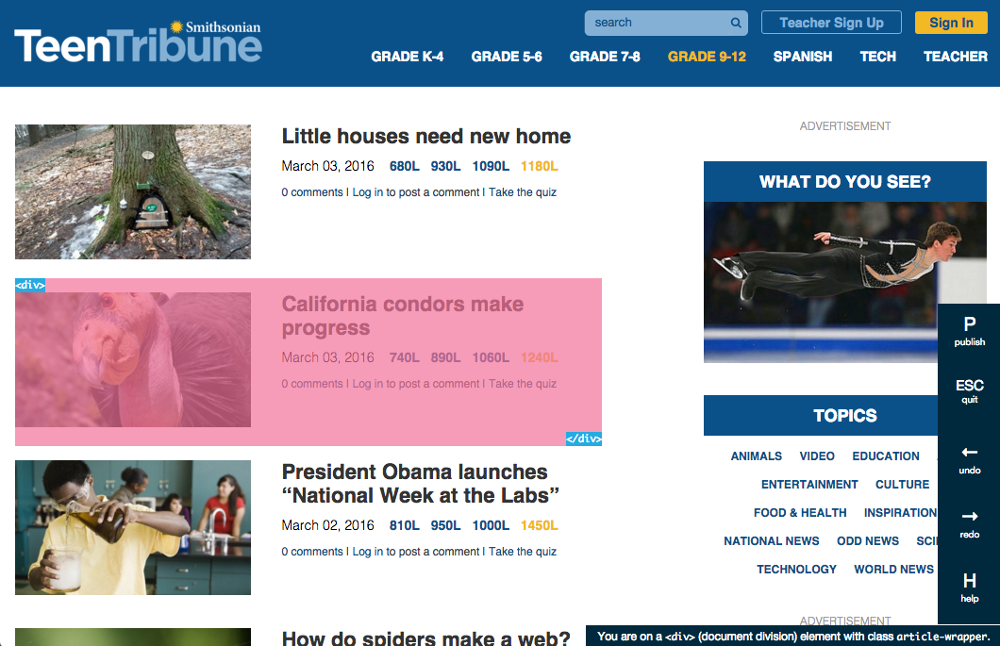
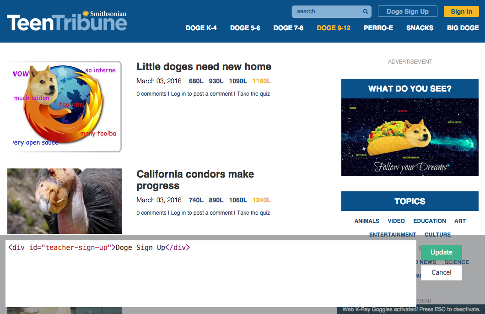

Web Literacy Basics | Hack the News
60 minutes
By using X-Ray Goggles, a tool that makes it easy to see and remix the code behind your favorite web pages, you remix a news website while learning about openly-licensed resources and different forms of media. You will learn how to code, compose, remix, and share.
Web Literacy Skills
21st Century Skills
Learning Objectives
- Distinguish between original content and a remix.
- Use X-Ray Goggles to alter a web page to give it a particular theme.
- Critique another learner's remix
Audience
- 13+
- Beginner web users
Materials
- Internet-connected computers
- Papers and pens
- Optional: printed HTML cheatsheet
- Optional: printed X-Ray Goggles cheatsheet
-
1. Preparation
Do the Web X-Ray Goggles sample activity on your own to become familiar with online remix.
You may also want to identify and publish a list of news sites that fit your learning community's interests and reading levels. For example, you might chose different current events sites for a middle school art classroom than you would for a high school journalism club.
Review this definition of the word "hack" to help learners unpack the term.
Optional: print any needed copies of the HTML cheatsheet and the Web X-Ray Goggles cheatsheet.
Post the URL, or Web address, of the Web X-Ray Goggles somewhere highly visible in your room. You may want to post it as a shortened link using a service like bit.ly.
-
2. Introduction
10 minutesWelcome your learners and explain that in this activity we're going to explore "remix." Give each learner a piece of paper and a pencil.
In pairs, ask the learners to sketch their favorite fictional character. No need for accuracy or too much detail — just draw it quickly.
After a few minutes, have the pairs swap their drawings. Prompt the learners to add something to their partner's drawing. Explain that this is remix in action!
-
3. Hack the News Using the Web X-Ray Goggles
40 minutesIn the same pairs, if enough equipment is available, have the learners open a modern web browser. Else, demonstrate on one computer and form small groups afterward so the learners can try it on their own.
Install the Web X-Ray Goggles.
Go to goggles.mozilla.org. Demonstrate how to drag the dark pink “Drag and drop me in your bookmark bar” button to your browser’s bookmarks toolbar.
Once you've installed the goggles, try the sample activity linked at the bottom of the homepage.
Navigate to a news web site
Ask for suggestions for news sites. Think about local newspapers, your school paper, or a national news site like The New York Times or The Guardian. Try to find websites that use a good amount of HTML, and not a lot of Javascript as it will be easier for your learners to remix.
Don’t worry — you’re not actually hacking the site for others. You’re changing a local version of the site that only you can see.
Decide on a remix theme
Inspired by the characters from the introduction, decide on a remix theme. Ideas include popular memes Nyan Cat or Doge.

Activate the Goggles
Click the Goggles in your bookmark toolbar to turn them on. Now when you mouse over elements of the news page, you’ll see their HTML tags and you can click on each element to get to the code underneath.
Click on part of the page to the remix
As you mouse over parts of the page, you'll notice that they become highlighted in different colors and that a tag pops up describing that part of the page. Click on any highlighted part of the page to remix it.
Try changing the headlines or rewriting some of the stories based on your fictional character. Edit some of the links and play with font size and color.
You can even swap out the images on a page. To grab an image from Facebook or Instagram, you'll need to click into the post, then right-click (or control-click) the image and chose something like, "Copy image location," from the menu.
TIP: How to find and swap in openly licensed image. The Creative Commons search page or the advanced settings in Google help you easily find an image you like with permission to use it. Right-click or control-click on the image you want and select: “Copy image location.” (Or “Copy image URL” or “Copy image address”, depending on your web browser.) Then paste your new image URL over top of the old one. Be careful not to lose the quotation marks!

Share
Publish your remix. Once you’re done, click the Publish button, or press 'P' on your keyboard. This makes your changes visible on the web for others to see.
Take it a step further. Have learners share their hacks with the news station their remixes used. Most news stations are on Twitter, so try tweeting a link to them and think about their reactions.
-
4. Reflection and Discussion
10 minutesDemo a few of the remixed pages and ask learners to share what they changed. Consider prompts such as:
- What version of the website do you like more?
- What else would you remix? What do you wish you could remix but couldn’t? Why not?
- How else can you find media that you can remix?
If time permits, invite learners to continue by remixing their partner's new page. You can discuss how the web makes it easy to modify content in this way and that we're always remixing and building on what others have made.
You can also discuss credibility and how understanding remix changes how you read or interpret information, as well as think about who authored it.
-
5. Optional: Badging
By using X-Ray Goggles, a tool that makes it easy to see and remix the code behind your favorite web pages, you remix a news website while learning about openly-licensed resources and different forms of media. You will learn how to code, compose, remix, and share.
Steps to complete this task:
- Install X-Ray Goggles and navigate to a news website such as the BBC.
- Activate the Goggles by clicking the “Remix” button (R on the keyboard) and change some of the text and images. You might want to pick a theme or story in which to remix around.
- Once you are finished with your Remix, hit the P button on your keyboard to Publish (via your WebMaker account) and share it across the web!
- Note: You can find your Web X-Ray Goggles remixes under the "Your Projects" section when you sign into Thimble using your Webmaker account and get their web addresses
Evidence:
Share a link to your remixed news article and/or upload a screenshot of your creation.
If you successfully complete the above, you will practice the following skills:
- Communication
- Creativity
- Problem solving